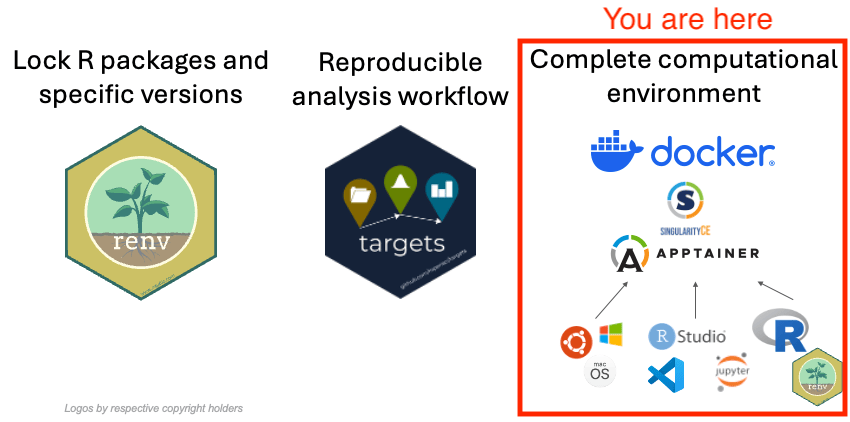

3c. Build your own Docker container image and run it locally
![]()

First, make sure you got familiar with how Docker containers work.
This task can only be done on your own computer.
For this tutorial you cannot use the Play with Docker Labs Environment, you can only follow along on your own computer, if you have Docker, OrbStack (recommended alternative for macOS), or other Docker-compatible software installed. Using the Play with Docker Labs environment is free and does not require any installation, only a web browser and a Docker Hub account, but the compute nodes they provide are limited in size and do not allow to build large container images, which in this case is essential. You can however experiment with a smaller container image
The Goal
Build your own Docker container image with the packages we require for the project built-into it. You can continue with your own project or you can reuse our snapshot of the expected results of the section 2 exercise on setting up a simple targets pipeline located at https://github.com/e-kotov/2025-mpidr-workflows-reference-02.
We are doing this for the scenario of preserving the environment of the original code in order to share the complete container image as a file that is completely self-contained including the operating system (Ubuntu (Linux) in this case), all system dependencies, R packages required for the analysis and even the RStudio IDE (Integrated Development Environment).
Instructions
Choose the Rocker Image version
Go to Rocker Project’s Docker Hub and find an appropriate version of the RStudio image. Since we are using modern R version and no trying to recreate an environment for an older version of R back from 2020, you can just use the most recent container image.
If you wanted to reconstruct the environment from several years ago, we would advice to also use the R version that was used then, like we did in the repository where we recreated R 4.2.2 from 2022 to run Jonas’s old code.
If you want to figure things out on your own and adpat the existing code you can look at our Dockerfile in the repository for Jonas’s old code at https://github.com/e-kotov/demographic-research.44-19-containerized/blob/main/Dockerfile4build/Dockerfile. Otherwise, continue following the steps below.
Create the Dockerfile
Create an empty text file called Dockerfile in a new folder Dockerfile4build.
The first line for the Dockerfile should be the instruction on which existing Docker container image to use. For the most recent Rocker Geospatial image, you can use the following code:
FROM rocker/geospatial:4.4.3Next, we need to create a temporary project in the container image, so that we could use it to activate {renv} and install the packages.
RUN mkdir -p /home/rstudio/project && \
chown -R rstudio:rstudio /home/rstudio/project
WORKDIR /home/rstudio/projectWe also need to copy the {renv}-specific files into the container image.
COPY --chown=rstudio:rstudio ../renv.lock renv.lock
RUN mkdir -p renv
COPY --chown=rstudio:rstudio ../.Rprofile .Rprofile
COPY --chown=rstudio:rstudio ../renv/activate.R renv/activate.R
COPY --chown=rstudio:rstudio ../renv/settings.json renv/settings.jsonFinally, we need to run R within the container image to install the packages.
RUN R -e "renv::restore(library = '/usr/local/lib/R/site-library')"Let us break down the most recent line in the Dockerfile:
R- startsR-e- executes the command that follows nextrenv::restore(library = '/usr/local/lib/R/site-library')- installs the packages listed in therenv.lockfile. The trick here is that we are installing the packages into the system library, which is/usr/local/lib/R/site-library, instead of a project library. This way, the packages will be integrated into the container image and will be seen by an R session. When you later connect your project folder to this container image, you will not need to install the packages or use{renv}anymore (in fact, you will need to deactivate{renv}).
Now we also remove the temporary project folder from the container image:
RUN chmod -R u+w /home/rstudio/project && rm -rf /home/rstudio/projectAnd finally we reuse the lines that instruct Docker how to run the container image from the original Dockerfile:
EXPOSE 8787
CMD ["/init"]This exposes the port 8787 (on which the RStudio Sever, which is actually the thing that you see as the RStudio in the web browser, runs) so that you would be able to access it at http://localhost:8787 in a web browser.
Remember to save the changes.
So your final Dockerfile should look like this:
FROM rocker/geospatial:4.4.3
RUN mkdir -p /home/rstudio/project && \
chown -R rstudio:rstudio /home/rstudio/project
WORKDIR /home/rstudio/project
COPY --chown=rstudio:rstudio ../renv.lock renv.lock
RUN mkdir -p renv
COPY --chown=rstudio:rstudio ../.Rprofile .Rprofile
COPY --chown=rstudio:rstudio ../renv/activate.R renv/activate.R
COPY --chown=rstudio:rstudio ../renv/settings.json renv/settings.json
RUN R -e "renv::restore(library = '/usr/local/lib/R/site-library')"
RUN chmod -R u+w /home/rstudio/project && rm -rf /home/rstudio/projectBuild the Docker Container Image
To build the Docker container image from the Dockerfile, run the following command in the terminal (you can use any name instead of rocker-443-custom - this is just a tag that you can use to refer to the container image later):
docker build -f Dockerfile4build/Dockerfile -t rocker-443-custom .If you are on macOS on a recent arm64 (Apple Silicon) chip, you will need to add an extra parameter to build this container image, as it is intended to be of a x86_64 processor architecture:
docker build --platform linux/amd64 -f Dockerfile4build/Dockerfile -t rocker-443-custom .This will take some time.
Let us break down this command:
| part of command | what it does |
|---|---|
docker build |
This is the base command used to build a Docker image from a Dockerfile. |
--platform linux/amd64 |
This is a parameter that is only needed on macOS on a recent arm64 (Apple Silicon) chip. It is intended to build the container image for a x86_64 processor architecture. |
-f Dockerfile4build/Dockerfile |
The -f flag stands for “file”. Dockerfile4build/Dockerfile is the path to the Dockerfile. |
-t rocker-443-custom |
The -t flag stands for “tag”. rocker-443-custom is the name of the image. You can choose any other name. |
. |
this very important . (dot) specifies the build context, which is the current directory. Docker will look for a Dockerfile in this directory to create the image. |
The container image will take about 3-6 minutes to build.
When the build is finished, you can check that it was added to the local container image storage:
docker imagesRun the Docker Container from your Image
Now you have a container image that you can run from the command line. To do so, run the following command in the terminal:
docker run --platform linux/amd64 --rm -p 8787:8787 -v $(pwd):/home/rstudio -e PASSWORD=somepass rocker-443-customLet us break down this command:
| part of command | what it does |
|---|---|
docker run |
This is the base command used to run a Docker container from local or remote container image storage. |
--platform linux/amd64 |
This is a parameter that is only needed on macOS on a recent arm64 (Apple Silicon) chip. It is intended to build the container image for a x86_64 processor architecture.. |
--rm |
This makes the container temporary. It will be destroyed after you stop it. You can explore other options (e.g. how to name containers, make them persistent and re-run the same ones after stopping) in the Docker documentation. But for now we want a disposable container that is destroyed after stopping. |
-p 8787:8787 |
This flag specifies that the port inside the container is mapped to your computer, so that you can access RStudio in a web browser. Briefly, RStudio in a container is actually a server software that works over a network and it is not exactly the same as RStudio on your laptop, even though it feels that way. This is why ports are necessary, but do not worry about it too much at the moment. |
-v $(pwd):/home/rstudio |
This maps the current directory (designated by $(pwd)) from which you are running the command to a folder inside the container (/home/rstudio). Thanks to this, when you use the containerized RStudio, you will have access to your local folder and will be able to run scripts and edit them. Instead of the current directory (designated by $(pwd)) you can provide /path/to/any/folder/on/your/computer. |
-e PASSWORD=somepass |
Sets the password. Better use a good password, even though you are running locally. |
rocker-443-custom |
The final part is the name and tag that you assigned earlier when you were creating the container image. |
The container starts almost instantly. You can now open a browser and go to http://localhost:8787 and use the password you set. The username is rstudio, the password is somepass.
Once it is loaded, you will see the message in R console:
# Bootstrapping renv 1.1.1 ---------------------------------------------------
- Downloading renv ... OK
- Installing renv ... OK
- Project '~/' loaded. [renv 1.1.1]
- One or more packages recorded in the lockfile are not installed.
- Use `renv::status()` for more details.Please ignore it, and just run:
renv::deactivate()renv::deactivate() will remove the line that activates renv from the .Rprofile file, or even remove the file entirely if this was the only line in it. This will happen in your project folder on your computer, because we have attached the project folder to the container image. So to reactivate renv, you need to run renv::activate() later.
The R session will automatically restart and you will have access to all the packages we have previously snapshotted and installed into the container. So you can run targets::tar_visnetwork() and targets::tar_make().
In this scenario, when you edit the files from within the container, because you have attached the project folder to the container image, the changes will be saved to the files in the project folder on your computer.
Stop the container
To stop the container, click the “power” button in the top right corner of the RStudio window in the browser. Close the web browser tab with RStudio. Click in the terminal and press Ctrl+C or Ctrl+\ to stop the container.
You should see:
[s6-finish] waiting for services.
[s6-finish] sending all processes the TERM signal.
[s6-finish] sending all processes the KILL signal and exiting.And then the terminal will be active again.
Final expected result
You can find the final expected result of this exercise at https://github.com/e-kotov/2025-mpidr-workflows-reference-03. Note that it also includes a Dockerfile for the other tutorial 3b. Make your own git repository reproducible in Binder.